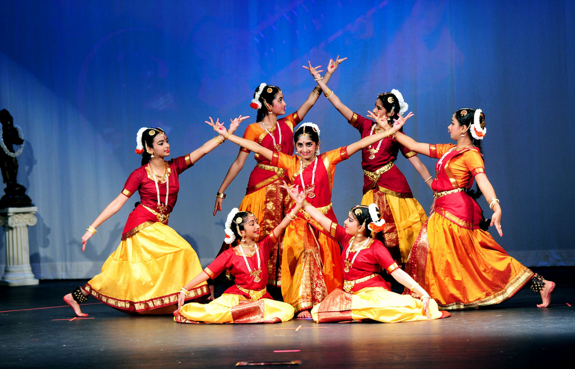
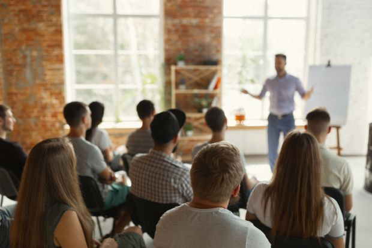

EXPLORE
College Events Overview
Learning, Innovation, Competition, and Celebration
Our college conducts a wide range of events designed to support both academic and personal growth of students. These events are organized throughout the academic year under the guidance of experienced faculty members and student coordinators.
College events help students gain real-world exposure, improve teamwork, and develop leadership skills. Active participation encourages innovation and creative thinking.
Types of Events Conducted
- Cultural Events – Dance, music, drama, and art competitions
- Technical Events – Coding contests, hackathons, robotics challenges
- Academic Workshops – Hands-on learning sessions
- Seminars & Conferences – Expert talks and knowledge sharing
Major Technical Achievements
Our students have actively participated in various hackathons and technical competitions at inter-college, state, and national levels. Their achievements reflect innovation, teamwork, and technical excellence.
Hackathon Achievements
| Hackathon Name | Year | Position Secured | Level |
|---|---|---|---|
| Smart India Hackathon | 2024 | Winner | National |
| CodeFest Hackathon | 2023 | Runner-Up | State |
| AI Innovation Challenge | 2023 | Top 5 | National |
| Campus Hack Day | 2022 | Winner | Inter-College |
Glimpses of College Events
Below are some moments captured during different college events. Each image represents student involvement, creativity, and learning.

|
Hackathon EventStudents actively participating in a hackathon where teams work together to solve real-world problems using innovative ideas and technical skills. |
|
 |
Cultural PerformanceStudents showcasing their talents in dance and music, promoting creativity, confidence, and cultural diversity. |
|
 |
Technical WorkshopA hands-on workshop session where students learn modern technologies, tools, and practical skills under expert guidance. |
Student Participation and Benefits
Participation in college events helps students develop communication skills, leadership qualities, and teamwork.
Students who actively take part in events receive certificates, recognition, and valuable experience that strengthens their academic and career profiles.